Gruppe 3
- Alice Hüllert
- Anna Severine Jensen
- Joanna Rasmussen
- Victor Øbro Bucholdtz
- Subangi Vasantharajan
Gruppekontrakt
Gruppekontrakten findes her.
Link og password til redesign:
Link: indsættes her
Password: Indsæt her
Koncept
Ideen ved vores design er at “rydde op” i sitet, ved at gøre det mere overskueligt for brugeren. Vi vil lave sitet til et sted for information om vores virksomhed, da vi har vurderet, ud fra målgruppen, at sitet ikke behøver bruges til - bestilling af bøger osv -, men derimod kun til branding af stedet.
Da målgruppen for vores virksomhed er i den ældre ende af spektret, vil vi gøre brugeroplevelsen enkel og nem at navigere i.
I vores visuelle design, genbruger vi virksomhedens farvekombinationer for at give hjemmesiden et velkendt udtryk for dem der besøger siden, som allerede kender godt til virksomheden.
Målgruppe
Vi leder efter læsere, og ud fra eksisterende undersøgelse ser det ud som om at den typiske læser I Danmark er oftest en kvinde mellem 20 og 29, men denne undersøgelse eksludere ikke læsning med hensyn til skole/uddannelse eller arbejde. Kigger vi på studier fra Tyskland og England kan vi se, at gruppen af mennesker der læser mest dagligt og uden pres fra skole/uddannelse og arbejde, er igen en kvinde, men nu over 60 år. Derfor er vores primære målgruppe kvinder over 60, derefter har vi mænd over 60. Sekundær har vi (primær piger) I alderen 20-29.
Analyse
Ud fra resultaterne på vores BERT test, kan de ses at den eksisterende hjemmeside vi har valgt, er en smule uorganiseret, uoverskuelig og at kvaliteten i den grad kunne forbedres.
vi her ud fra vores egen personlige mening, samt resultaterne fra vores test, valgt at gøre hjemmesiden en del mere moderne og overskuelig, dog med henblik på målgruppen, som primært er den lidt ældre generation.
vi ønsker at gøre kvaliteten af hjemmesiden bedre og mere overskuelig for brugeren. Den skal være nem og ligetil, samtidig med at den har emnet i fokus og brugeren har nemt ved at finde hvad de leder efter.
Fonten der er brugt på den eksisterende hjemmeside er Lato, som er meget traditionel og dette ønsker vi at beholde, da fonten ikke skal tage for meget fokus.
Farverne der er brugt på hjemmesiden er meget mørke og kedelige og vi har valgt at beholde nogle af de originale farver, samt tilføje en del lysere farver og elementer, så hjemmesiden ikke bliver så tung i udtrykket.
Dokumentation af virksomhedsvideo
Foreløbig synopsis
En kunde kommer ind i butikken og vi ser her igennem filmen, hvad en kunde kan finde i butikken, samt hvordan boghandlen også byder på meget mere end bare bøger. det er også muligt at købe en kop kaffe og sætte sig tilbage og nyde et afslappet øjeblik. Der er også flere arrangementer i shoppen som kan opleves. det ender med at kunden køber en bog, inden personen forlader shoppen. Vi bliver på den måde guidet igennem en generel kundeoplevelse, imens interviewet vil “køre” i baggrunden.
Filmen optages i rejseboghandlen Tranquebar, som foregår i behagelige og varme omgivelser. Vi har prøvet at skabe dybde i billederne, ved at tage overordnede billeder der fanger hele rummet, samtidig med at fokusere på nogle specifikke detaljer i butikken, som giver seeren en ide af hvad butikken har at byde på.
Interviewguide
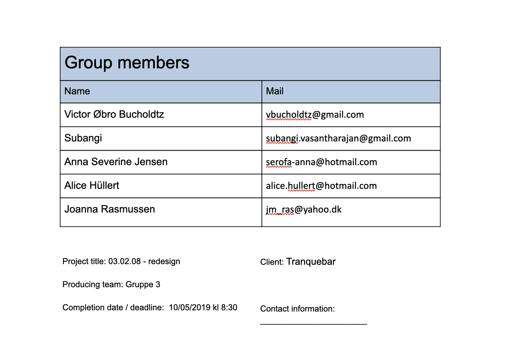
Præmis:
Én sætning, der udtrykker det vi vil med vores historie:
- Præsentere butikken for fremtidige kunder
-
Hvad er budskabet eller vinklen?
- At få hele verden og møde litterære helte i København
Log-Line:
Handlingen fortalt i to sætninger:
- En beskrivelse af Tranquebar som boghandel, hvor der kommer lidt baggrundshistorie på, samt formål og koncept af butikken.
Koncept:
En kunde kommer ind i butikken og vi ser her igennem filmen, hvad en kunde kan finde i butikken, samt hvordan boghandlen også byder på meget mere end bare bøger. det er også muligt at købe en kop kaffe og sætte sig tilbage og nyde et afslappet øjeblik. Der er også flere arrangementer i shoppen som kan opleves. det ender med at kunden køber en bog, inden personen forlader shoppen. Vi bliver på den måde guidet igennem en generel kundeoplevelse, imens interviewet vil “køre” i baggrunden.
Filmen optages i rejseboghandlen Tranquebar, som foregår i behagelige og varme omgivelser. Vi har prøvet at skabe dybde i billederne, ved at tage overordnede billeder der fanger hele rummet, samtidig med at fokusere på nogle specifikke detaljer i butikken, som giver seeren en ide af hvad butikken har at byde på.
Farver: Eftermiddagssol/gyldent og varmt lys
Spørgsmål:
- 1. Kan du præsentere dig selv
- 2. Kan du fortælle lidt overordnet om butikken?
- 3. Hvordan startede I?
- 4. Hvor stammer navnet Tranquebar fra?
- 5. Hvad er tranquebar mere end en boghandel?
- 6. Hvilken oplevelse ønsker I, man får når man besøger Tranquebar?
- 7. Hvorfor er lige netop Tranquebar anderledes end andre boghandlere?
- 8. Hvordan sørger I for at kunden får den bedste oplevelse, når de handler hos jer?
- 9. Hvordan vil du beskrive Tranquebar med tre ord?
- 10.Hvad er Tranquebars største styrke?
- 11.Hvad er det for nogle kunder, der typisk besøger jer?
- 12.Hvilken baggrund har jeres medarbejdere?
- 13.Hvad går I allermest op i, når I skal lave arrangementer?
- 14.Hvilken oplevelse fortæller kunderne, de oftest har af boghandlen?
- 15.Har du noget, du vil fortælle til en person, der endnu ikke kender eller har besøgt Tranquebar?
Videostoryboard/Produktionsplan
Tidsplan:
- 08:00 - mødes ved Tranquebar (Borgergade 14)
- (08:00 - 10:00 - B-roll optagelser)
- 10:00 - interview af Vibeke (Bestyrer af tranquebar)
- (10:00 - 12:00 - Interview optagelser)
- 12:00 - Senest optagelse færdig
Udstyr:
- Kamera (+microfon) - Alice
- Tripod - Victor
- Knapnåls microfon - Victor
Plan for still-fotos (udvælg minimum 10 motiver, ender som 60 billeder)
Vores plan med vores still-fotos er at få fanget den stemning og den stil som de har i Tranquebar. Vi vil igennem billeder af blandt andet bøger, etnisk design og cafén, vise hvad rejseboghandlen har at byde på. Vi vil tage inspiration fra deres eksisterende billeder, men med en fornyelse.
- 10 motiver:
- - Butiks front
- - Caféen
- - Kaffe + bog (kunde)
- - Café table books
- - Bogreoler
- - Kurve
- - Tørklæder
- - Guirlander
- - Globus
- - Bøger delt op i lande
Planen for redigering af de still-fotos vi har taget, er at gøre dem varmere og give dem et indbydende og sammenhængene look. Vi søger en café-agtig og hyggelig stemning, hvilket er derofr vi har redigeret billerne med ...
Udkast og plan til redesign
Styletile
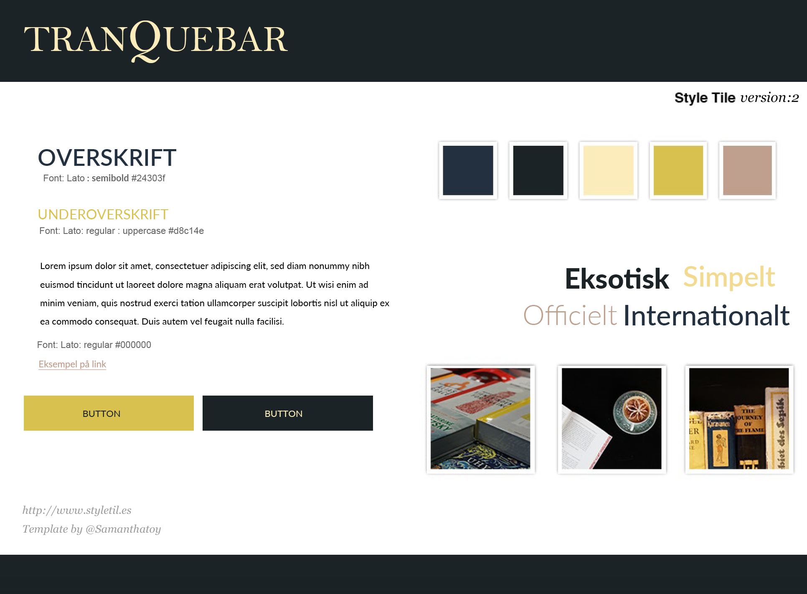
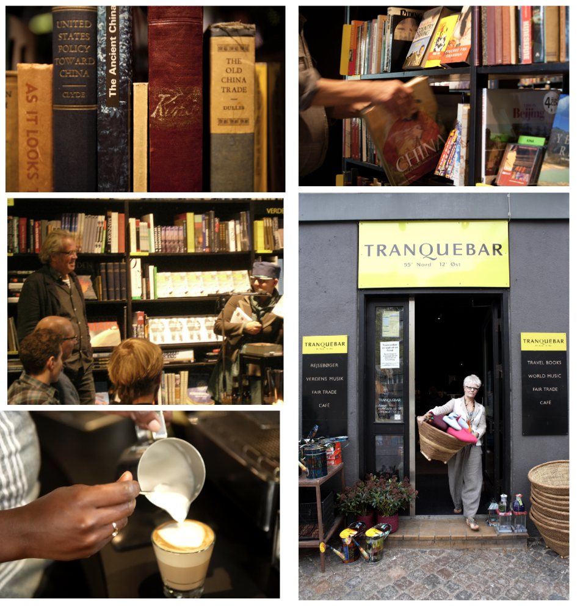
Vi har både valgt bredformat og højformat i vores fotostil. Vi har fokuseret på nærbilleder, for at vise detaljerne i butikken.
Mobil Wireframe
Web Wireframe
Layoutdiagram
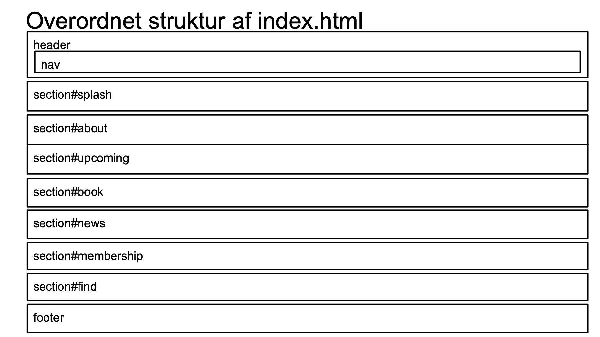
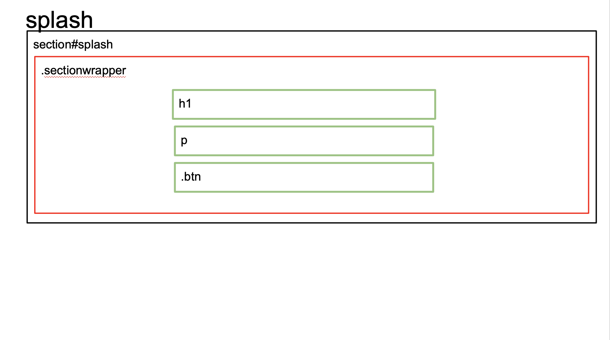
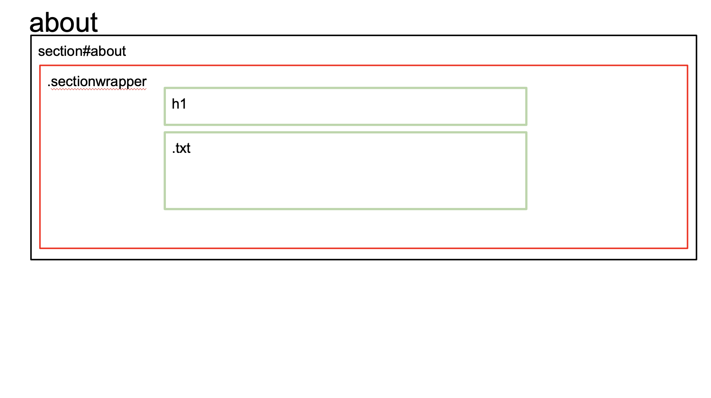
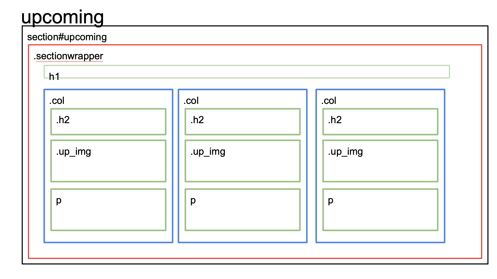
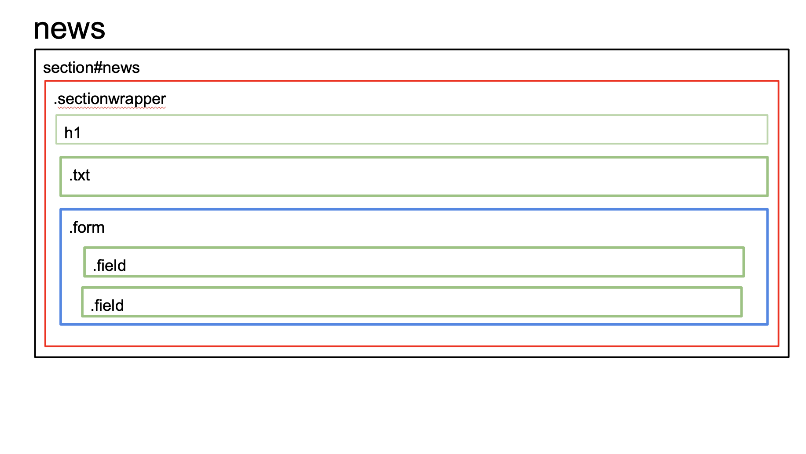
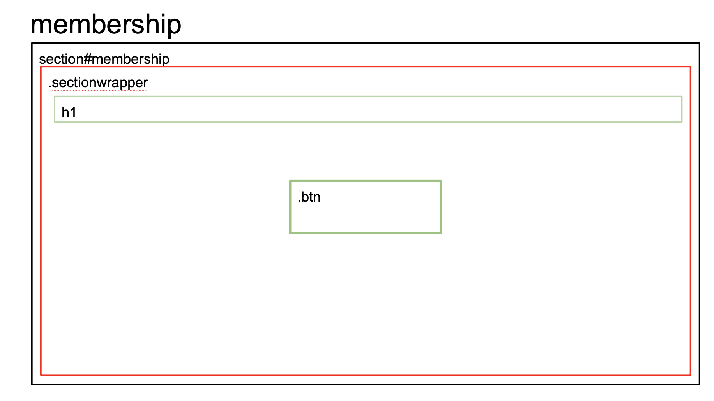
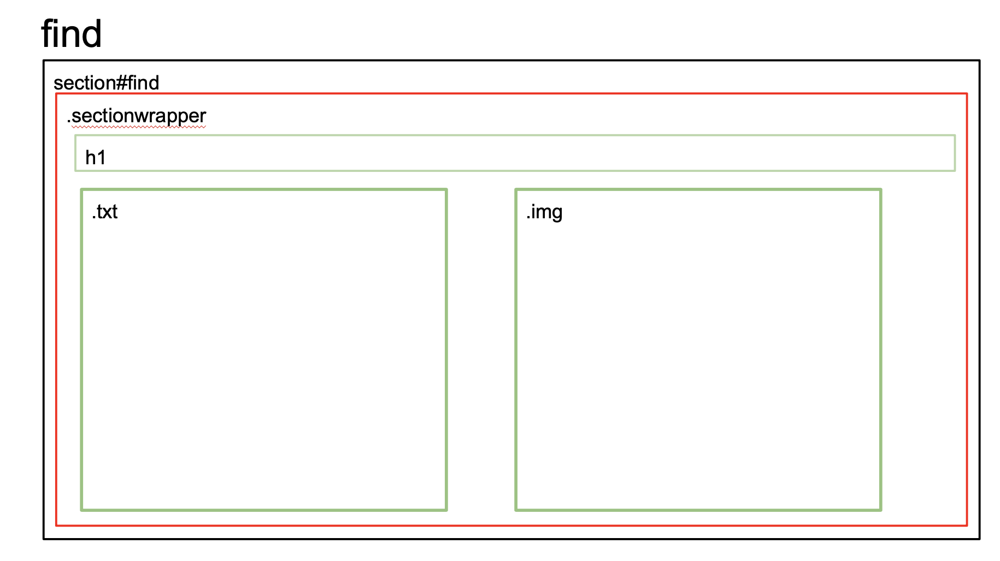
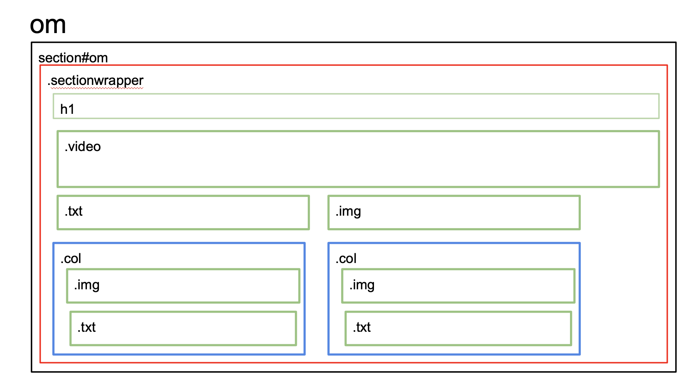
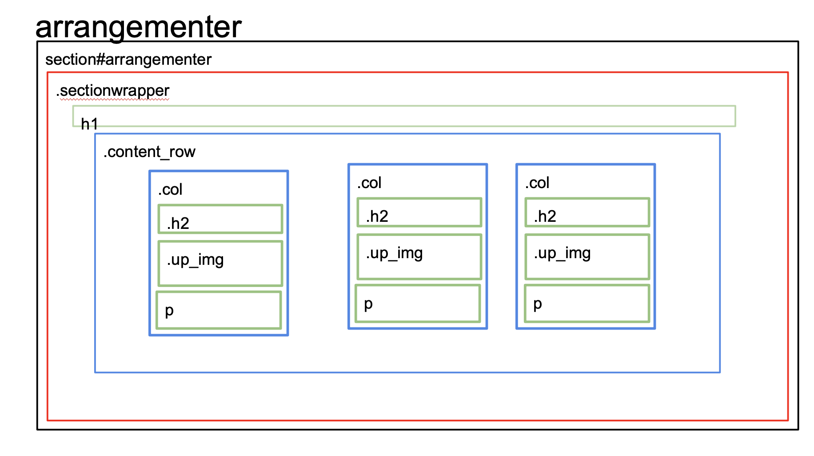
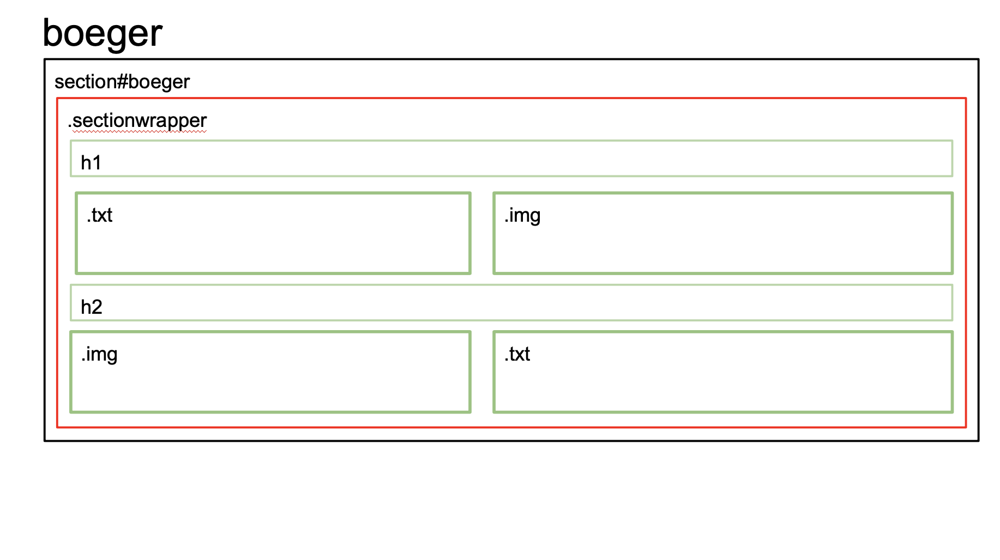
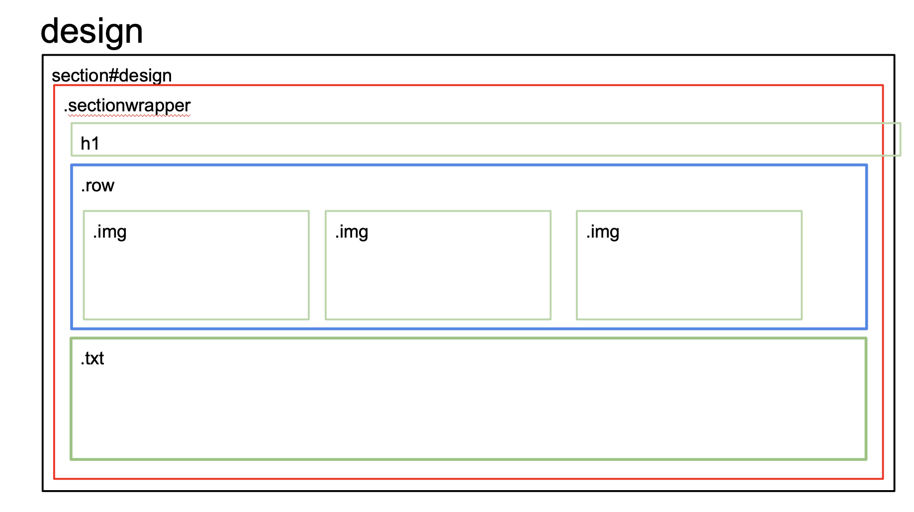
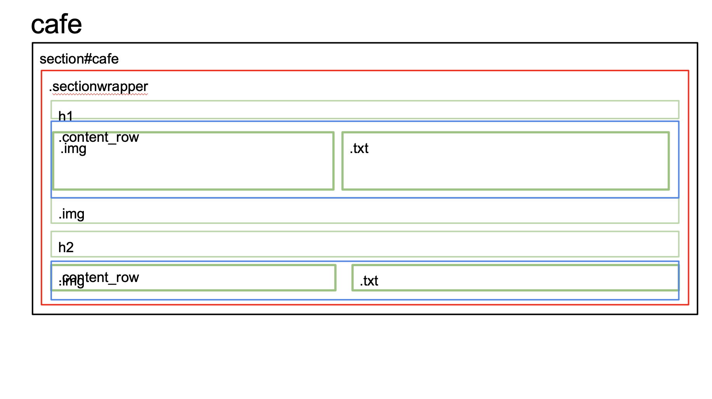
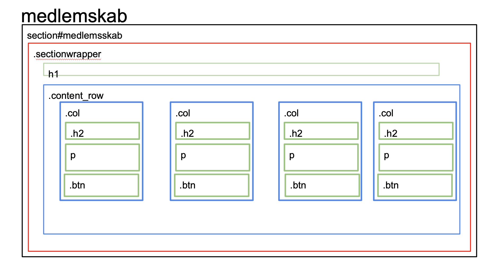
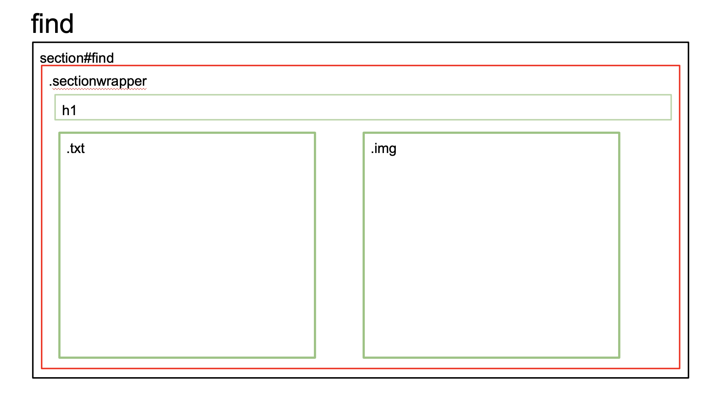
Content - liste over det content, som I vil bruge på sitet.
Det content vi har tænkt os at bruge:
- Det content der allerede ekstirerer på hjemmesiden
- Vores egne billeder
- Vores video af shoppen
Responsiv video: Jeres video hostet af jer selv (dvs. videoen ligger i h.264 fuld HD på jeres egen server).
Underside med jeres still-fotos
beskrivelse af processen af jeres postproduktion. Hvad har I gjort ved billederne. Eksemplificer jeres originalbilleder med mindst 3 stk og forklar, hvordan og hvorfor de er efterbehandlet. Indsæt et masonry gallery med alle 60 originalbilleder i bunden af siden. Linket til koden er i opgaveformuleringen
Kodning (udvælg og forklar minimum ét interessant HTML-eksempel med tilhørende CSS )
Nedskrivelse af test og test-resultater fra test af endeligt redesign i uge 19, herunder BERT-test, 5 sec-test og Lighthouse audit (minimum 3 billedoptimeringer)
Reflektion
Vi startede med, at lave styletiles og moodboard med udgangspunkt i vores stilanalyse af virksomhedens eksisterende site, da vi var enige om at beholde stil elementer (farver, fonte, logo) fra sitet. Vi opstillede to forskellige styletiles i to forskellige farvekombinationer.
Content mæssigt var vi enige om, at vi ikke ville ændre meget i det skrevne information, dog ville vi benytte vores egne still-billeder som vi havde taget i butikken. Endvidere ville vi rydde op i sitet ved at gøre det mere overskueligt.
Da vi var blevet enig om det stilmæssige elementer til sitet, begyndte vi på wireframen, som vi først skitserede i hånden og efterfølgende rentegnede i XD. Derefter opstillede vi et layout diagram til sitet.
Herefter gik vi igang med at kode vores redesign-site, samt lave vores dokumentation site. de to har vi lavet i samme stil, da vi gerne ville have en rød tråd imellem de to sider.
De vanskeligheder vi er stødt på i løbet af forløbet er generelt dårlig kommunikation. Gruppen har til tider haft svært ved at kommunikere og hermed arbejde optimalt, men vi har i sidste ende formået at skabe et resultat vi alle kan stå inde for og som vi er tilfredse med. Github har også været lidt af en udfordring, da det er et helt nyt værktøj for os, og det har skabt lidt problemer. Vi kan overordnet godt se formålet ved at gøre brug af Github, når det virker uden komplikationer.
Evt. kode andre steder fra
Dokumentationsite: HTML og CSS fra speckyboy.com, til masonry gallery
HTML, CSS og JS til videoafspiller fra blog.teamtreehouse.com
Skærmdump af Git versions historik